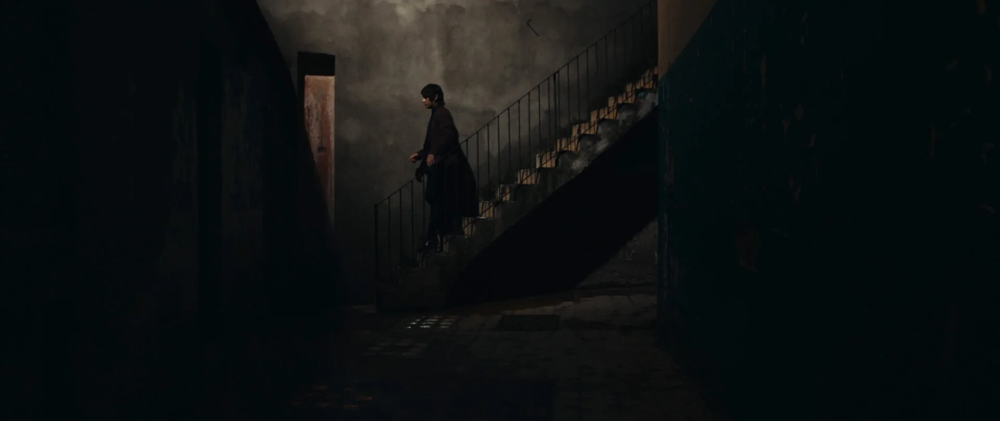
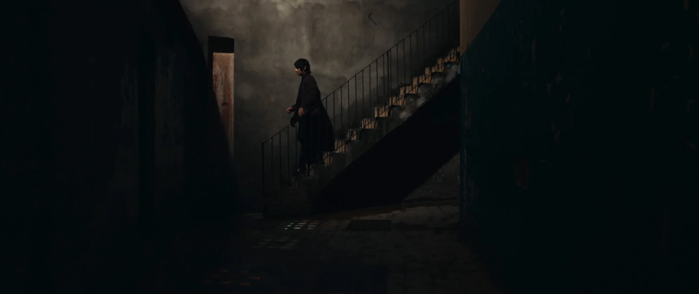

Tarde
By Siddhartha
,
Verse 1
Tarde se me hacía, Por volver a verte, Mientras tú dormías, Visité
tu mente
Pre-Chorus
Y el sueño nos reunió, En un bosque, De cámara lenta,
Y un árbol pronunció tu nombre
Chorus
Ahora solo tú y yo, Y los ojos abiertos, Ahora solo tú y yo, Y
nosotros despiertos
Brillas como luna en el camino
Verse 2
Tarde se me hacía, Por poder tenerte, Mientras tú dormías, Visité tu mente
Pre-Chorus 2
Y el sueño nos reunió, En un bosque, De cámara lenta, Y un
árbol pronunció tu nombre
Chorus 2
Ahora solo tú y yo, Y los ojos abiertos, Ahora solo tú y yo, Y
nosotros despiertos
Brillas como luna en el camino
Hook
Pasan las horas, y la memoria, Busca una solucíon, Para volverte
a ver, Para encontrar tu voz
Pasan las horas, y la memoria
Busca una
solucíon
Para volverte a ver
Para encontrar tu voz
Jorge Siddhartha Gonzáles Ibarr, who goes by the stage name Siddhartha, is a Mexican solo rock musician
and producer. His music blends rock, pop, and Latin rhythms with catchy
melodies and lyrics that touch on social and political issues.
Siddharthas's influences include, The Cure, Depeche Mode, Gustavo Cerati,Soda Stereo, and
The Beatles